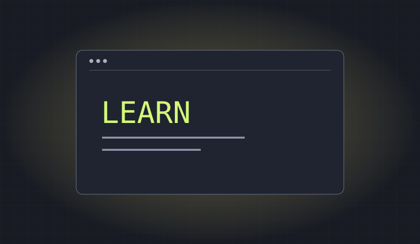

What I worked on
- Created a multi-page travel website with linked destination pages and consistent HTML/CSS styling.
Where it stands
2022 coursework. Repository contains source pages and assignment instructions.
Multi-page travel website with destination cards, navigation, images, and shared styling.

2022 coursework. Repository contains source pages and assignment instructions.